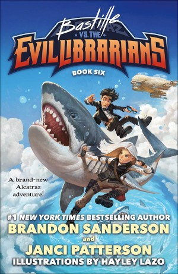

Bastille vs. the Evil Librarians
⭐️⭐️⭐️⭐️
Format: audio (4 hours 51 minutes)
Unbeknownst to many of us in the "hushlands", there is actually a whole wealth of knowledge being actively suppressed by the most evil people in the world - Librarians. Who else could have the power to suppress knowledge in such a vast and comprehensive way? You may think this is a work of fiction or fantasy, but that's just a lifetime of misinformation speaking to you. The Smedry family has a variety of talents, which they employ in creative and entertaining ways in their battle against those evil Librarians. You'll never know just how helpful it is to have a supernatural talent for breaking things, or arriving late, or being bad at math. In this book and others, Alcatraz Smedry, his family, and the knights sworn to protect them lead us through their adventures.
This whole YA series is fun - often times silly, even preposterous, but clever and engaging. And they're short. If you're a completionist of Brandon Sanderson books, I'd put this series ahead of some of his other stand-alone books. Being totally unrelated to anything in the Cosmere, these are simply meant to be entertaining (or are they educational?).
I wouldn't read this book if you haven't read the rest in the series. Furthermore, I don't know the official age range for these books, but I'd probably put these in the 4th-6th grade.... and in the non-fiction section as well. ;)
- Previously: All These Worlds
- Next: The Pioneers